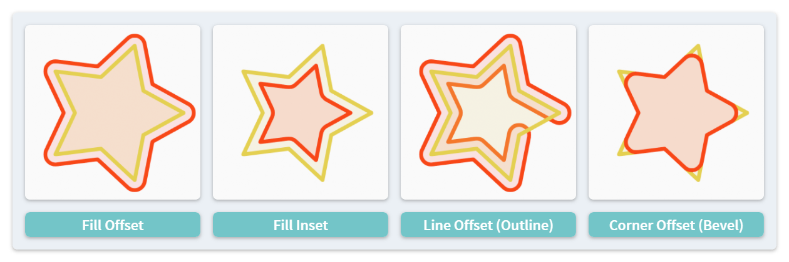

Offset #
The 2D Offset operation is performed on the path of a stroke to achieve inflating/deflating/beveling of the shape.
Although Blender has some inset/bevel operators/modifiers, they are not available for Grease Pencil. Besides, compared with Blender's method, this add-on will not cause the self-intersection of the output shape.

These functions are realized by calling the Clipper library. Please check the link for more details.
From Sidebar Panel #
The Offset button in the sidebar panel will offset each selected stroke with a given length value. A negative length value indicates insetting.
Shape Style #
There are 3 offset modes to select from:
- Fill Mode: Inflat or deflat the shape towards the normal direction of each line segment.
- Line Mode: Inflat the outline of the stroke. Please notice that:
- A negative offset amount is meaningless in this mode.
- From Blender 3.4, there is an official operator Outline achieving a similar effect.
- Corner Mode: This mode is a combination of two Fill Mode offset operations in the opposite direction (e.g., an offset followed by an inset immediately). As a result, most points in the stroke are unchanged, but the corners will be "eroded". This can achieve an effect of bevel.
The corners of the output shape can also have different styles, including Rounded, Flat and Miter.
Color Tint #
A new vertex color can be assigned to the output strokes. With a tint color and the Keep Original option on, repeating the operator for multiple times can create a gradient coloring effect.
From Toolbar #
Offset operations can also be performed from the toolbar as a tool named 2D Offset. Instead of typing a length value, the offset amount is controlled by mouse dragging.
The offset mode can be switched by holding different keys:
- Default: Fill Mode
- Ctrl: Corner Mode (Bevel)
- Shift: Line Mode